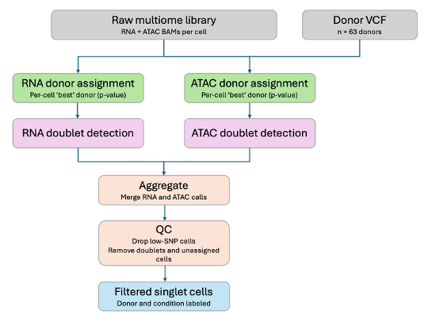
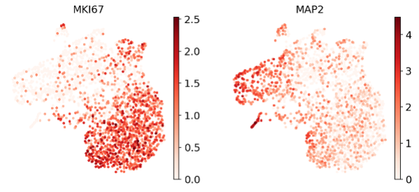
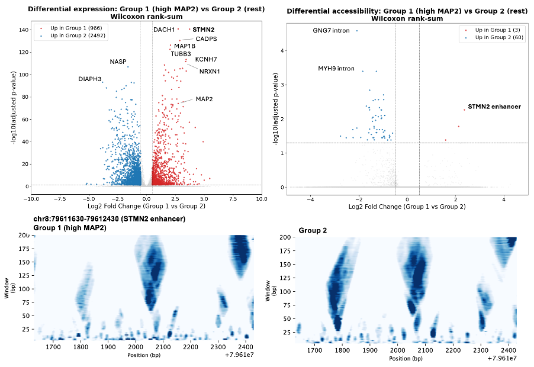

Authors: Evie Pless & Max Horlbeck
Published: Aug 4, 2026
Introduction
We know an individual’s genetic background influences their risk for disease,
but the underlying mechanisms are generally not understood, particularly for
complex disorders influenced by multiple common polymorphisms. Human induced
pluripotent stem cells (hiPSCs) – which can differentiate into nearly any
cell type – are a powerful system to test genotype-to-phenotype hypotheses
and develop relevant models individualized to the background of the hiPSC
donor. Single-cell transcriptomic and epigenomic methods allow us to ask
how gene expression and regulation differ based on individuals’ genetic
backgrounds and disease status, making it a powerful complement to hiPSC-based
differentiation experiments. However, culturing, extracting, and processing
cell lines independently is laborious, expensive, and can make it nearly
impossible to disentangle true biological signal from batch effects. An
approach called “cell villages,” first introduced by a team led by Steve
McCarroll at Harvard Medical School, removes most technical variability by
culturing cell lines from multiple human donors in a shared culture dish
(Wells et al. 2023). With support from the Cell Discovery Network, we
generated 10x paired scRNA-seq and scATAC-seq data from a cell village
comprised of hiPSCs derived from people with autism and unaffected controls,
provided by Dr. Ralda Nehme and her team at the Broad Institute. This vignette
describes how we processed the resulting multiomics data from donor assignment
and doublet detection to preliminary analyses on differential gene expression
and accessibility between autism and control patients. We also provide an
annotated Jupyter notebook illustrating how to use PRINT and seq2PRINT
(Hu et al. 2025) to begin examining chromatin architecture and DNA-binding
protein dynamics using the village ATAC-seq data.

Pre-processing and donor assignment
To collect the data, we processed a single village comprised of 63 donors (patients + controls) which had been differentiated to neural progenitor cells (NPCs) using an inducible NGN2 transgene. The cryopreserved NPCs were thawed and processed through the standard 10X Multiome across four sample lanes for an initial target count of >40,000 nuclei (>500 cells per donor), although pre-sequencing quality control suggested the actual nuclei count was lower than intended. Sequencing was first performed for a single lane as a quality control pilot, which is the dataset used for the analysis described here.
Before donor assignment, we processed RNA and ATAC FASTQ files with Cell Ranger ARC. The program identified 2,737 high-quality cells (out of >500K barcodes), and the QC metrics looked reasonable (RNA: and >4k median genes per cell, ATAC: >32k median high-quality fragments per cell). The insert size distribution showed the expected periodicity, and a TSS enrichment score of 7.21 was consistent with successful Tn5 transposition at accessible chromatin.
Next, we launched the genotype-based demultiplexing pipeline (Wells et al. 2023, see open source code and documentation here: https://github.com/broadinstitute/Drop-seq) – with many thanks to Ruochi Zhang of the Buenrostro lab at the Broad Institute for scripts stitching together Drop-Seq tools to provide the foundation for the pipeline (Figure 1). The first step, AssignCellsToSamples, assigns each cell to a donor based on their genotype provided in a VCF/BCF file. (The Drop-Seq authors recommend including all donors currently being used in the lab in case of sample swaps, although time and memory will scale with number of donors and cell barcodes included.) We used a genotype array with ~300k SNPs and 63 donors provided by our collaborators. For each read that covers an informative SNP, the Drop-Seq donor assignment tool asks: how likely is it this allele came from each donor? It then adds up the log-likelihoods for each informative read to determine the BEST donor for each cell. The p-value indicates how much more likely the best donor is compared to all other donors.
To accept a donor assignment, we applied a confidence-based filter (p<0.01) and a SNP filter (<= 10) which together exclude low-SNP cells while retaining cells with sufficient SNP-coverage for confident calls. A high percentage of cells from our datasets were confidently assigned to a donor (RNA: 96%, ATAC: 92%), and the median SNP coverage was high for these assignments (RNA:140, ATAC:557). The concordance between RNA and ATAC was relatively high, with 89% of assigned cells sharing a donor assignment.
Doublet detection
Doublets occur when two or more nuclei are encapsulated in a single droplet. The Drop-Seq tool DetectDoublets models each pair of donors contributing alleles, finds the donor pair with the maximum likelihood, and finally asks whether a single donor or a donor pair best explains the data. We detected 6 high confidence doublets (p<0.01) from the RNA dataset and none from the ATAC dataset.
As an aside, in our first run of the demux pipeline, we calculated a doublet rate of 28.2%, but the vast majority of these doublets involved one specific donor. Although the donor was represented in 99.1% of the doublet calls, it only had 1.2% of the singlets assigned to it. The donor did not stand out in other ways, for example it had an average level of heterozygosity and missing data. In almost all the implicated doublets, this donor was listed as “donorTwo”, meaning it was consistently cast as the secondary donor invoked to explain a doublet, rather than the primary donor whose own cells were forming one. A real donor should anchor doublets about as often as it's paired into them; this asymmetry pointed toward a donor that wasn't actually contributing cells at all. Our current theory is that the problematic donor was not present in the cell village, and that it happens to have an “average” genotype, meaning it shares common alleles with many donors. By chance, adding this genotype to the doublet model helped Drop-Seq Tools explain noise in donor detection so it spuriously included it in many cells. After removing the problematic donor from the VCF and rerunning doublet detection, the calculated doublet rate decreased to 0.2%.
Genetic demultiplexing can only detect doublets from different donors, so we added a computational method as well. Scrublet (Wolock et al. 2019) works by simulating artificial doublets from the provided single cell data and then building a nearest-neighbor classifier to detect doublets from the real data. Scrublet found 2 doublets, which did not overlap with the genetic demultiplexing doublets, and we removed them before analysis. The low doublet rate from genetic and computational demultiplexing was consistent with the lower nuclear input into the multiome experiment.
Quality control and final yield
The table below outlines the filters that were applied in the demux process. For preliminary and separate analyses with the RNA and ATAC datasets, we used the donor assignments generated from each respective dataset. However, we are investigating the cells with discordant calls and exploring options for merging donor assignments between the datasets.
| Filter step | Removed (from RNA dataset) |
|---|---|
| Low donor assignment confidence (p<0.01) | 115 cells |
| Low SNP coverage (< 10 SNPs) | 1 cell |
| Genetic doublets (p <0.01) | 6 cells |
| Scrublet doublets | 2 cells |
| Final retained | 2613 (95% original) |
Before further analysis, we applied basic QC thresholds to the RNA-seq data (99.5% passing), and we selected 2000 highly variable genes for UMAP visualization and Leiden clustering. Similarly, we filtered for high quality reads for the ATAC-seq data, and we selected the top 50,000 peaks for additional analysis. Sex-linked genes and regions were removed (more details below).
Preliminary analyses featuring PRINT and seq2PRINT for analyzing chromatin landscape
UMAPs, regardless of modality, did not show strong clustering or gradients based on autism condition or donor, consistent with low batch effects expected from cell village data and the homogenous differentiation to NPCs achieved by NGN2 expression. Leiden clusters showed some significant enrichment by donor but not by condition.
When we initially performed differential gene expression analysis between conditions, the top hits were X- and Y- linked genes. In females, one X chromosome is silenced in each cell, but 15-25% of X-linked genes escape inactivation. Since our donors with autism skew male, it erroneously appeared that these donors had higher expression of genes like UTY and USP9Y and lower expression for genes like XIST and TSIX. After removing sex-linked genes, these hits disappeared, and we found more interesting results such as NNAT and DCC upregulated in patients with autism. However, when we switched from a Wilcoxon rank-sum test to the more rigorous DESeq2 method (Love et al. 2014), pseudobulking cells by donor and then treating each as a replicate, only one hit was found to be statistically significant (a lncRNA downregulated in patients with autism), and no differentially accessible regions were found. These preliminary results are not too surprising given autism is a complex disease with more than 900 candidate risk genes (Arpi et al. 2022) and this analysis essentially averages expression across all donors.
We took a step back and asked what biological processes are producing a strong signal in our data. The gene expression UMAPs show a strong gradient for genes related to proliferation (e.g. MKI67) and neuronal differentiation state (e.g. MAP2) (Figure 2).

We performed differential expression and accessibility analysis on the high MAP2 cells (group 1) vs the other cells (group 2). Many of the top differential expression hits were neuronal genes involved in cytoskeletal dynamics, neurite/axon outgrowth, and synaptic function. The region that is most accessible in group 1 compared to group 2 falls within an enhancer in the pan-neuronal gene STMN2 – a gene that is significantly upregulated in the MAP2-high group. Footprints of this region using PRINT show group 2 has a strong nucleosome footprint on the left side of the region which is no longer present in group 1, potentially facilitating transcription factor binding in the locus (Figure 3). For more details on how to use PRINT and seq2PRINT to investigate chromatin architecture and protein binding, check out this annotated notebook.

Together, this pilot shows that a cell village approach with genotype-based donor assignment can cleanly distinguish among dozens of donors from a single pooled multiome run with minimal batch effects. While sequencing of more nuclei and additional cell types will be needed to confidently disentangle autism-specific signal, the signal we did find – a gradient of expression of a neuronal maturation – showed how differential expression, differential accessibility, and chromatin footprinting with PRINT can reinforce each other and point toward new, testable hypotheses.
References
- Arpi MNT, Simpson TI. SFARI genes and where to find them; modelling Autism Spectrum Disorder specific gene expression dysregulation with RNA-seq data. Sci Rep. 2022 Jun 16;12(1):10158. doi: 10.1038/s41598-022-14077-1. PMID: 35710789; PMCID: PMC9203566.
- Hu Y, Horlbeck MA, Zhang R. et al. Multiscale footprints reveal the organization of cis-regulatory elements. Nature. 2025 Jan 22; 638:779–786. doi: 10.1038/s41586-024-08443-4
- Love MI, Huber W, Anders S. Moderated estimation of fold change and dispersion for RNA-seq data with DESeq2. Genome biology. 2014 Dec 5;15(12):550.
- Wells MF, Nemesh J, Ghosh S, Mitchell JM, Salick MR, Mello CJ, Meyer D, Pietilainen O, Piccioni F, Guss EJ, Raghunathan K, Tegtmeyer M, Hawes D, Neumann A, Worringer KA, Ho D, Kommineni S, Chan K, Peterson BK, Raymond JJ, Gold JT, Siekmann MT, Zuccaro E, Nehme R, Kaykas A, Eggan K, McCarroll SA. Natural variation in gene expression and viral susceptibility revealed by neural progenitor cell villages. Cell Stem Cell. 2023 Mar 2;30(3):312-332.e13. doi: 10.1016/j.stem.2023.01.010. Epub 2023 Feb 15. PMID: 36796362; PMCID: PMC10581885.
- Wolock SL, Lopez R, Klein AM. Scrublet: computational identification of cell doublets in single-cell transcriptomic data. Cell systems. 2019 Apr 24;8(4):281-91.
Annotated notebook
Explore the PRINT/seq2PRINT multiome analysis walkthrough that accompanies this spotlight.